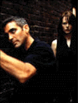
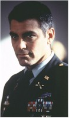
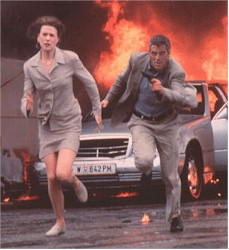

Contents | Features | Reviews | News | Archives | Store |
 |
|
| Movie Credits | Buy It! |
The Peacemaker
Review by Eddie Cockrell
Posted 26 September 1997
|  | Directed by Mimi Leder Starring George Clooney, Nicole Kidman, Screenplay by Michael Schiffer, from an article by
|
Before the lights go down the alert moviegoer will manage visits to the concession stand and any pending personal business, because once The Peacemaker starts it won't be possible to leave the theater. As schematic as a popular entertainment needs to be yet refreshingly devoid of significant lulls in the action – for exposition, weapon reloading, lovemaking and the like – the film is fast, smart and single-minded, providing not only a satisfying bang for the ever-beleaguered moviegoing buck but memorable debuts for first-time feature director Mimi Leder and fledgling film studio DreamWorks SKG (Steven Spielberg, Jeffrey Katzenberg and David Geffen) – as well as ringing confirmation that George Clooney is indeed a movie star.
Top-billed in a cast short on star power but long on believability, Clooney plays Thomas Devoe, a committed but rule-bending Lieutenant Colonel in the Special Forces branch of the Marine Corps first seen being grilled by a Senate panel for sending a Ford Explorer to the daughter of an enemy contact. Called on by his country to unite with acting head of the White House Nuclear Smuggling Group, Dr. Julia Kelly (Nicole Kidman), to chase down stolen nuclear weapons, the duo commandeers all manner of military hardware and personnel in pursuit of a madman who, at the end of the day, is firmly convinced that he is doing the right thing by detonating the one remaining rogue bomb in his backpack near the United Nations building in New York City.
Along the way Leder – who was hired by Spielberg on the strength of her multi-Emmy career directing L.A. Law and E.R. – stages some truly thrilling action set pieces, including the opening hijack sequence aboard speeding trains on parallel tracks, a standard car chase that becomes a vindictive demolition derby in a quaint town square, the surgically-precise rescue of the bombs and the final footrace through Manhattan's Lower East Side. She hasn't reinvented the action film, not by a long shot: clichés of the genre abound, from the soulful, tortured bad guy to the digital display on the nuclear device counting down the seconds to annihilation. No, what Leder has done is taken these tired tropes and surrounded them with political awareness and enhanced them with a visual imagination and wit rarely seen in current examples of the genre: a beeper goes off during a baptism, night goggles glow red on a group of terrorists, the fading Olympic rings are briefly glimpsed on the wall of a bombed-out Sarajevo apartment block. So too the principal bad guy is given a motivation that is as heartbreaking as it futile, and a sense of place is nicely evoked (more on that illusion later) through letter-perfect Serbo-Croatian and Russian spoken by a fine, unknown supporting cast that brings dramatic weight to their anonymity. Foreign film producers should note the ingenious subtitling work, although it is probably prohibitively expensive. By breathing new life and urgency into the story, penned by investigative veterans Leslie Cockburn and Alexander Cockburn, the entire film is imbued with a clear-eyed, no-nonsense attitude and a fresh spirit of discovery.
Clooney, for this film, has shed the ticks and mannerisms that worked so well for him on E.R. but were so distracting in One Fine Day and Batman & Robin in favor of a muscular, bulge-eyed straightforwardness that propels him from a likable actor to a movie star (plus, he looks really cool in the beret and fatigues). For her part, Kidman carves a striking presence out of the non-stop fireworks, acting both as a conduit for the audience's sense of astonishment at the proceedings and the capable, multi-lingual scientist who manages not only the technical details of the crisis—she's graduated from building the bombs to defusing them—but Devoe's hair-trigger temper as well (at one point she calls him "a talented soldier with sloppy impulse control"). In the supporting cast, only the always-capable Armin Mueller-Stahl (the Oscar-nominated father from Shine) is recognizable, although credit is due particularly to Marcel Iures' truly memorable Dusan Gavrich, a terrorist who has been personally touched by tragedy.
Amusingly, much criticism has already been leveled against the film for ignoring completely any hint of a relationship between Devoe and Kelly or glimpses of their private lives. This carping ignores the fact that this sort of thing now seems dated and even faintly embarrassing in the genre, a point brought home through the exciting but positively antediluvian coming attractions trailer for the next Bond film, Tomorrow Never Dies, prior to the Peacemaker screening (which, in retrospect, makes the other trailer, for the Bruce Willis film The Jackal, seem even more pointless). Bottom line: The Peacemaker is a better, leaner, more muscular film precisely because of its narrow agenda of thrills.
Already described as a breathless tour through Europe, The Peacemaker was in fact shot primarily in Macedonia and, to a greater extent, Bratislava, the picturesque and still relatively undiscovered capital of Slovakia, itself a pristine and atmospheric republic which became independent when the former Czechoslovakia split in 1993. In fact, not only is the supposedly Viennese car chase actually staged in the old town section of the city, but the climax of the chase, glimpsed briefly in the coming-attractions trailer, was filmed almost directly in front of the American Embassy and ornate Slovak National Theater there. And the final sequence, in which Devoe and Kelly must defuse the nuclear warhead in a cathedral, is supposedly set in Manhattan but was actually shot in the breathtaking St. Martin's Cathedral, hard on the banks of the Danube in Bratislava (the exterior can be glimpsed briefly in an establishing shot, with the Manhattan skyline digitally added around it). Bratislava even stands in for Sarajevo at one point, as a CNN live report is filmed in front of Komenius University. Leslie Dilley's production design already has everyone believing Vienna and Sarajevo were actual locations As for aural atmosphere, Hans Zimmer's score barely skirts cliché but registers for its melodramatic use of French horns and a lusty male chorus.
So if The Peacemaker is such a crackling good action film, why wasn't it released in the summer? Setting aside for a moment the question of when exactly it was finished, the answers seem obvious: there were already too many action films jostling for position this summer (including the ill-fated Batman & Robin), and the film is just too smart and well-crafted to have risked getting lost in that shuffle, a fate which the equally worthy Face/Off narrowly escaped.
Still, The Peacemaker's box office success is still very much in question. Discerning moviegoers attracted by the sheer novelty of a woman director at the helm of such a big movie and willing to give Clooney the benefit of the doubt will ultimately be satisfied by the final product, but it remains to be seen if an average multiplex crowd can be wowed by a movie that sacrifices cheap thrills in favor of global relevance. "The world changes, we must change with it," someone says early in the proceedings, and the same is true of Hollywood and its various genres. Steven Spielberg understands that, the Cockburns understand that, Mimi Leder understands that, George Clooney understands that, and Nicole Kidman understands that. If the American moviegoing public understands it, The Peacemaker will be a solid Fall hit.
Contents | Features | Reviews | News | Archives | Store
Copyright © 1999 by Nitrate Productions, Inc. All Rights Reserved.